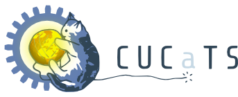

CompSoc is affiliated with/collaborates with a number of organisations. If we've missed you off the list below contact president@ox.compsoc.net.

The Cambridge University Computing and Technology Society ( CUCaTS ) is the main university-wide student society for those taking interest in computer science and technology in Cambridge.
CompSoc hopes to build a lasting relationship with them and particpate in joint events.
We keep in touch with the UK Computer Socs and hope to participate in something big soon.